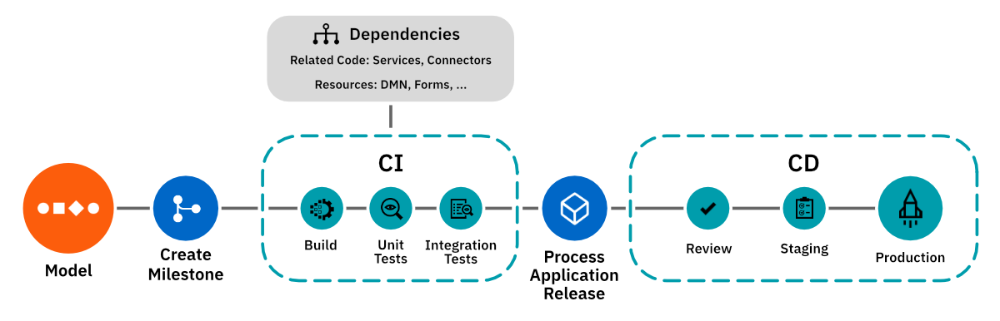
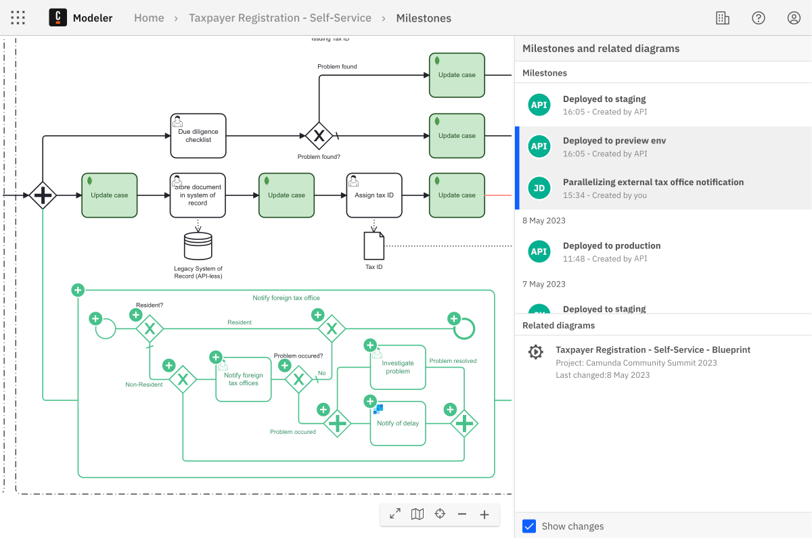

Integrate Web Modeler into CI/CD
IntermediateTime estimate: 1 hour
Web Modeler serves as a powerful tool for the development and deployment of processes and process applications. While Web Modeler simplifies one-click deployment for development, professional teams often rely on continuous integration and continuous deployment (CI/CD) pipelines for automated production deployments. The Web Modeler API facilitates integration of Web Modeler into these pipelines, aligning with team practices and organizational process governance.
Continuous integration and deployment are pivotal for rapid and reliable software development, testing, and delivery. These practices automate the building, testing, and deployment processes, leading to shorter development cycles, enhanced collaboration, and higher-quality releases.
Integrating Web Modeler into your CI/CD pipelines can significantly enhance process application development and deployment workflows. By automating process application deployment, changes can be promptly and accurately reflected in the production environment. This agility empowers teams to swiftly respond to evolving business needs, fostering a flexible and adaptable process orchestration approach.
Prerequisites
Each pipeline is unique. The Web Modeler API offers flexibility to tailor integrations according to your pipelines. To get started, there are a few prerequisites based on your setup:
- A platform to host a version control system (VCS) such as GitHub or GitLab.
- An existing pipeline or a plan to set one up using tools like CircleCI or Jenkins, cloud platforms such as Azure DevOps Pipelines, or built-in solutions of VCS platforms like GitHub Actions or GitLab's DevSecOps Lifecycle.
- Make yourself familiar with the Web Modeler API through the OpenAPI documentation.
- Understand how clusters work in Camunda 8.
- Ensure you’ve created a Camunda 8 account, or installed Camunda 8 Self-Managed.
Setup
The Camunda Marketplace offers a customizable process blueprint for CI/CD pipelines to streamline the setup process described below. This blueprint provides a ready-to-use proof of concept for a CI/CD pipeline for Web Modeler, enabling you to synchronize Web Modeler files to GitLab and deploy them across different environments.
While a pipeline for process application integration and deployment resembles general software CI/CD pipelines, key distinctions exist. Consider the following:
- Web Modeler uses milestones to indicate specific process states, such as readiness for developer handover, review, or deployment.
- A process application comprises main processes and diverse resources, such as subprocesses, forms, DMN decision models, Connectors, job workers, and orchestrated services. Some applications bundle these resources, while others focus on a single process for deployment.
- Process reviews differ from code reviews, occurring on visual diagrams rather than XML.

Obtain API clients and tokens
Before getting started, obtain API clients and tokens for integrating Web Modeler and accessing the process engine via API:
Disable manual deployments from Web Modeler
To enforce pipeline-driven deployments to your environments, consider disabling manual deployments.
Self-Managed
Disable manual deployments for any user by configuring environment variables ZEEBE_BPMN_DEPLOYMENT_ENABLED and ZEEBE_DMN_DEPLOYMENT_ENABLED as documented here.
SaaS
Users without Admin roles in Console can deploy only on dev, test, or stage clusters. To restrict their deployment permissions remove the Developer role from users in Console.
Only organization owners or users with the Admin role can deploy from Web Modeler to prod clusters.
Read more in the user roles documentation.
Triggering CI/CD
You need triggers to initiate the pipeline for files or projects. Choose between manual pipeline start or automatic background triggers based on events. Common approaches include:
- Initiating the pipeline manually from your CI/CD tool/platform by uploading the file intended for deployment.
- Starting the CI pipeline by creating a pull/merge request in the version control system.
- Triggering pipelines by listening to milestones with certain characteristics.
Sync files with version control
Synchronize files between Web Modeler and version control systems (VCS) and vice versa. Manage both files and projects by using a complete set of CRUD (create, read, update, delete) operations provided by the Web Modeler API. By syncing files from Web Modeler to your VCS, you benefit from full file ownership and avoid duplicated data housekeeping.
For automatic file synchronization, consider maintaining a secondary system of record for mapping Web Modeler projects to VCS repositories. This system also monitors the project-to-repository mapping and update timestamps.
To listen to changes in Web Modeler, you currently need to implement a polling approach that compares the update dates with the last sync dates recorded. Use the POST /api/v1/files/search endpoint with the following payload to identify files updated after the last sync date:
{
"filter": {
"projectId": "(PROJECT TO SYNC)",
"updated": ">(LAST SYNC DATE)"
},
"page": 0,
"size": 50
}
Pagination is enforced for all listed search endpoints. Ensure you obtain all relevant pages.
We work to replace this with a webhook or subscription approach. An alternate approach involves manually triggering synchronization or delegating synchronization triggers to other sources, such as the pipeline itself, creation of new branches, or pull/merge requests.
Real-time synchronization isn't always what you need. Consider Web Modeler as a local repository, and update your remote repository only after files are committed and pushed. This aligns with the concept of milestones.
Listening to milestone creation
A milestone reflects a state of a file in Web Modeler with a certain level of qualification, such as being ready for deployment. You can use this property to trigger deployments when a certain milestone is created.
Currently, you have to poll for milestones to listen to new ones created. Use the POST /api/v1/milestones/search endpoint with the following payload to identify milestones created after the last sync date:
{
"filter": {
"created": ">(YOUR LAST SYNC DATE)"
},
"page": 0,
"size": 50
}
You will receive a response similar to this, where the fileId indicates the file with the milestone created:
{
"items": [
{
"id": "string",
"name": "string",
"fileId": "string",
...
},
...
]
}
To retrieve the content of this particular milestone, use the GET /api/v1/milestones/:id endpoint. To obtain the latest edit state of the file, use the GET /api/v1/files/:id endpoint. This endpoint also provides the projectId necessary for the POST /api/v1/projects/search endpoint if you want to push the full project via the pipeline.
Progress is underway to introduce webhook registration or event subscription for milestone creation monitoring.
Combine these two approaches and listen to milestones to sync files to your version control, create a pull/merge request, and trigger pipelines.
Pipeline stages
The following examples illustrate setting up build, test, review, and publish stages within a pipeline.
Build stage
While there is no distinct concept for a build package in Camunda 8, artifact structuring depends on your overall software architecture. The build stage should primarily focus on acquiring dependencies and deploying them to a preview environment.
Set up preview environments
Offering an automatically testable and review-ready process preview mandates a dedicated preview cluster. Numerous options exist, varying with software development lifecycle design, preferences, and Camunda 8 deployment type (SaaS, self-managed, or hybrid). This guide proposes a setup with lightweight local self-managed preview clusters (or embedded engines) and full-fledged staging and production clusters (Self-Managed or SaaS).
Using fully-featured clusters
For local preview environments, you can deploy a comprehensive Zeebe cluster including Operate and Tasklist. Options include using docker-compose or Kubernetes via Helm. All necessary endpoints and UIs are available for thorough process/application testing. Opt for a cluster version aligned with your production cluster to ensure process compatibility.
Using embedded Zeebe engines
If you don't need to spawn all apps such as Operate or Tasklist, you can use the lightweight embedded Zeebe engine, which is a community-maintained project, to set up a cost-effective solution with an in-memory database. Together with the Zeebe Hazelcast exporter (community-maintained as well), you can consume data generated from your process for reporting or testing.
In the build stage, deploy your process or project to a cluster or embedded engine. Post-pipeline completion, such as deployment to staging or production, preview environments can be discarded.
For GitLab users, consider using GitLab Review Apps to provide preview environments.
Deploy resources using the zbctl CLI in this pipeline step, compatible with both SaaS and Self-Managed clusters. Alternately, utilize the Java or Go client library or any community-built alternatives.
To maintain a single source of truth, avoid multiple Web Modeler instances for different feature branches. Instead, maintain a single Web Modeler installation for all environments, utilizing milestones to signify versioning and pipeline stages. Feature branches can be managed by cloning and merging files or projects, ensuring synchronization using VCS.
Automate deployment of linked resources/dependencies
Pipeline-driven deployment can be executed for a single file or an entire project. A separate system of record, maintained outside Web Modeler, can handle finer-grained dependency management. Fetch the full project for a file using the GET /api/v1/files/:id endpoint to acquire the project's projectId. Subsequently, use the POST /api/v1/files/search endpoint with the following payload to retrieve all project files:
{
"filter": {
"projectId": "(PROJECT ID)"
},
"page": 0,
"size": 50
}
Pagination is enforced for all listed search endpoints. Ensure you obtain all relevant pages.
To retrieve the actual file content, iterate over the response and fetch it via GET /api/v1/files/:id. Parse the XML of the diagram for the zeebe:taskDefinition tag to retrieve job worker types. Utilizing a job worker registry mapping, deploy these workers along with the process if required.
If you are running Connectors in your process or application, you need to deploy the runtimes as well. Parse the process XML for zeebe:taskDefinition bindings to identify the necessary runtimes (in addition to job workers). To learn how to deploy Connector runtimes, read more here for Self-Managed, or here for SaaS.
Deploy resources in this pipeline step using the zbctl CLI, compatible with both SaaS and Self-Managed clusters. Alternatively, utilize the Java or Go client library or any community-built alternatives.
Add environment variables via secrets
If you are running Connectors, you need to provide environment variables, such as service endpoints and API keys, for your preview environment. You can manage these via secrets. Read the Connectors configuration documentation to learn how to set these up in SaaS or Self-Managed.
Test stage
Keep strict quality standards for your processes with automatic testing and reporting.
Lint your diagrams
Add a step to your pipeline for automatic process verification using the bpmnlint and dmnlint libraries. Maintained by the bpmn-io team at Camunda, these open source libraries provide a default set of verification rules, as well as the option to add custom rules. They provide reporting capabilities to report back when the verification fails. These are the same libraries Web Modeler uses to verify diagrams during modeling.
You could even report the wrong diagram patterns together with examples to resolve it using this extension.
Unit and integration tests
For unit tests, select a test framework suitable for your environment. If working with Java, the zeebe-process-test library is an excellent option. Alternatively, employ the Java client with JUnit for testing your BPMN and DMN diagrams in dev or preview environments. Similar testing can be performed using community-built clients in Node.js, Python, or Go.
Review stage
During reviews, use the Modeler API again to add collaborators, or to create links to visual diffs of your milestones, and automatically paste them into your GitHub or GitLab pull or merge requests. This provides you the freedom to let reviews happen where you want them, and even include business by sharing the diff links with them in an automated fashion.
After review, use the DELETE /api/v1/projects/{projectId}/collaborators/email endpoint to remove collaborators again.
Create a link to a visual diff for reviews
Use milestones to indicate a state for review. Use the POST /api/v1/milestones endpoint to create a new milestone, and provide a description to reflect the state of this milestone using the name property. The current content of the file is copied over on milestone creation.
While it is possible to do a diff of your diagrams by comparing the XML in your VCS system, this is often not very convenient, and lacks insight into process flow changes. This approach is also less effective when involving business stakeholders in the review.
The Web Modeler API addresses this by providing an endpoint to generate visual diff links for milestones. Utilize the GET /api/v1/milestones/compare/{milestone1Id}...{milestone2Id} endpoint to compare two milestones. Obtain IDs for the latest milestones via the POST /api/v1/milestones/search endpoint, utilizing the fileId filter to identify the file to review. The resulting URL leads to a visual diff page similar to this:

Example review flow
The following process diagram demonstrates an example flow of how to run a preview using milestones and a diff link in GitHub:
Review a running process application
If deployed in a review environment, processes/applications can be shared with peers for interactive review. For comprehensive review, full clusters inclusive of Operate and Tasklist can be used for process execution. This closely simulates the final experience. To integrate the preview environment with custom applications, leverage the Operate and Tasklist APIs and deploy them within the review environment.
In case you use an embedded Zeebe engine, or want to provide a lightweight, focused review experience, you can use Zeebe Simple Monitor, which is a community-maintained Web App similar to the Play mode in Web Modeler. Deploying Zeebe SimpleMonitor allows for thorough process testing and review.
Publish stage
Push approved changes to staging or production by deploying them to the respective clusters. You can use the zbctl CLI to deploy via your pipeline, which works both for a SaaS or Self-Managed cluster. Deployments work slightly different on SaaS and Self-Managed, since there are differences in the cluster connection. Read more about deployments here.
Define resource authorizations
For clusters with resource authorizations enabled (via the RESOURCE_PERMISSIONS_ENABLED feature flag), use the Identity API to assign the necessary authorizations through the pipeline. This step ensures appropriate accessibility for process/application stakeholders or updating existing authorizations.
Monitoring and error handling
As with any CI/CD integration, it's crucial to set up monitoring and error handling mechanisms. These can include:
- Monitoring the CI/CD pipeline execution for errors and failures.
- Using Operate to catch incidents and send alerts to the pipeline in the test stage.
- Sending notifications or alerts in case of deployment issues in both the build and publish stages.
- Implementing rollback mechanisms in case a faulty BPMN diagram gets deployed.
FAQ
Can I do blue-green deployments on Camunda 8?
Blue-green deployments are possible with Camunda 8 with limitations. While switching clusters is quick for new process instances, audit logs and existing process instances remain tied to the previous cluster. Consider exporting audit logs from Elasticsearch or OpenSearch to your own streams if needed. If you don't have to migrate running process instances, keeping them running on the previous cluster alongside new instances on the new cluster is also an option.
Can I implement blue-green deployments with Camunda 8 SaaS?
While blue-green deployments are more straightforward with Self-Managed setups, you can implement similar deployment strategies with Camunda 8 SaaS. Keep in mind the limitations and differences between clusters when planning your deployment approach.
How can I prevent manual deployments from Web Modeler?
To enforce CI/CD pipelines and restrict manual deployments, you can disable manual deployments. For Self-Managed setups, set environment variables ZEEBE_BPMN_DEPLOYMENT_ENABLED and ZEEBE_DMN_DEPLOYMENT_ENABLED. In Camunda 8 SaaS, only the Developer role allows deployments from Web Modeler. Assigning any other role effectively removes deployment privileges.
How can I sync files between Web Modeler and version control?
Use the Web Modeler API's CRUD operations to sync files between Web Modeler and your version control system. Consider maintaining a second system of record to map Web Modeler projects to VCS repositories and track sync/update dates.
How do I listen to milestone creation in Web Modeler?
Currently, you need to poll for milestone creations using the POST /api/v1/milestones/search endpoint of the Web Modeler API. Compare the created date of milestones with your last sync date to identify newly created milestones.
What is the purpose of the build stage in my pipeline?
The build stage focuses on preparing dependencies and deploying them to a preview environment. This environment provides a preview of your process that can be tested and reviewed by team members.
Can I lint my process diagrams for verification?
Yes, you can use the bpmnlint and dmnlint libraries to automatically verify your process diagrams against predefined rules. These libraries provide reporting capabilities to identify and fix issues during the build stage.
How can I perform unit and integration tests on my processes?
You can use the zeebe-process-test library for Java-based unit tests or community-built clients for other programming languages. These libraries allow you to execute your BPMN and DMN diagrams with assertions in your development or preview environments.
How do I provide environment variables to Connectors in preview environments?
You can manage environment variables for Connectors using secrets. This can be set up in both Camunda 8 SaaS and Self-Managed. Refer to the Connectors configuration documentation for details.
How can I monitor and handle errors in my CI/CD pipeline?
Implement monitoring mechanisms in your CI/CD pipeline to catch errors and failures during the deployment process. Additionally, consider implementing rollback mechanisms in case a faulty BPMN diagram is deployed.